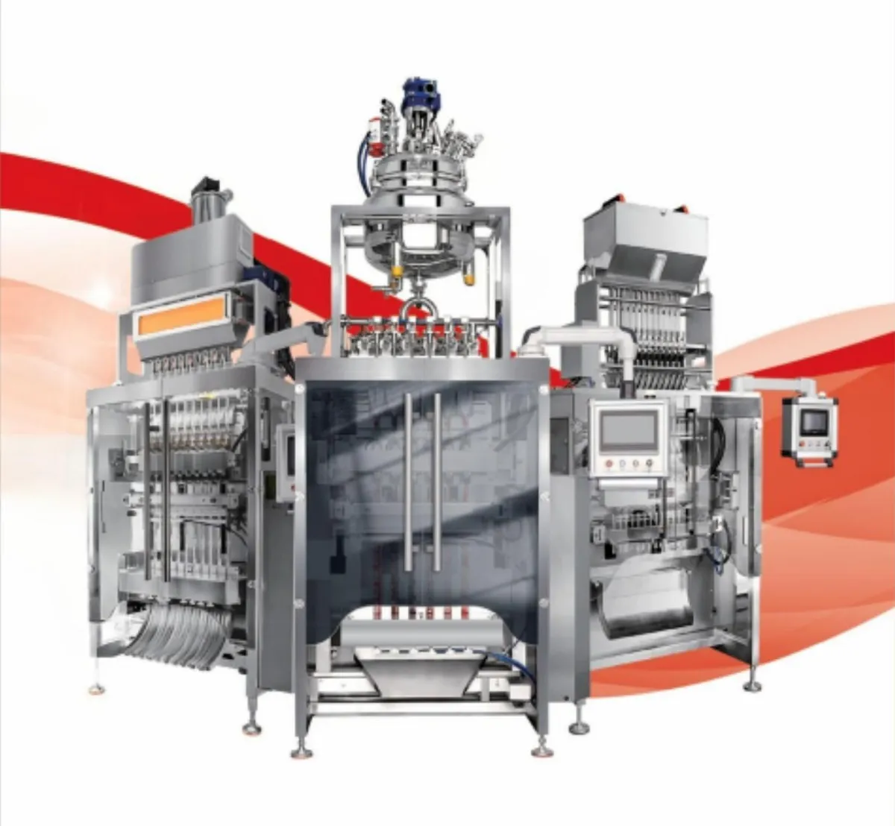

How Much Does a Packing Machine Cost? 7 Factors That Set the Price
By the FOOD LINE engineering team · Updated
Short answer: A packing machine's price is set mainly by the dosing system your product needs, the speed (number of lanes or bags per minute), the pack format, the automation around the machine, contact materials and options such as nitrogen flushing or check weighing.

1. Product and dosing system
The doser is often the most expensive part. A volumetric cup filler for sugar costs far less than a 14-head multi-function vertical snack packer for chips; a servo auger on our full-auto coffee powder sealing machine or a piston pump on a vertical sachet liquid packaging machine sits in between.
2. Speed and number of lanes
On sachet and stick machines, price rises with lanes: a 2–4 lane FL-M500 sachet machine costs less than a 4–16 lane FL-M980. On vertical form fill seal machine lines, bigger frames (FL-V730, FL-V900) and continuous high-speed versions cost more.
3. Pack format
Bags made from roll film (VFFS) need a simpler machine than automated pouch packaging equipment, which picks, opens and fills premade zipper, flat-bottom or spout pouches.
4. Accuracy
Higher accuracy usually means more weighing heads, servo drives or load cells. For bulk 25 kg bags, our fully automatic granule packaging machine uses a dual-speed weigher to reach ≤ ±0.1 %.
5. Single machine or complete line
Elevators, weighers, a check weigher machine, metal detectors, coders, boxing and palletising add to the price but cut labour. A semi-automatic bagging line suits up to about 5,000 bags/day; fully automatic lines suit 10,000+.
6. Materials and standards
SUS304 contact parts are standard; SUS316L for salty, acidic or corrosive products, explosion-proof electrics for chemical plants and CE documentation all affect cost.
7. Options and voltage
Nitrogen flushing, gusset devices, hanging holes, date coders, dust extraction and non-standard voltages (110 V, 415 V, 440 V) are priced as options. Browse all automatic packing machines & vertical form fill seal systems to compare frames.
Get an exact price
Send your product, weight per pack, speed, pack type and voltage. We reply within 24 hours with a configuration and itemised quotation, and can test your sample free of charge.
FAQ
What details do you need before quoting an exact packing machine price?
Share five inputs: product name and form (powder, granule, liquid or solid), weight or volume per pack, target speed (packs per minute or per day), pack format and dimensions, and your factory voltage and phase.
What are your standard payment terms and manufacturing lead times?
Terms are 30 % T/T deposit and 70 % balance before shipment after approving the factory acceptance test (FAT) video, or L/C at sight for larger orders. Standard machines ship in 20–35 working days and complete lines in 35–60 days.
Do non-standard voltages like 110 V or 415 V cost much extra?
We build machines to match your local supply — including 110 V 60 Hz, 220 V 60 Hz, 415 V 50 Hz or 440 V 60 Hz — at little or no extra cost depending on the transformer or motor specification.
Can I test my product before placing an order?
Yes. Send product samples and roll film or pouches; we run a free test on the machine and send you the video and finished packs before you confirm.